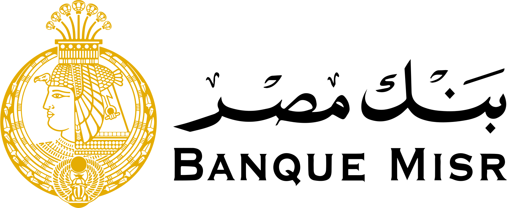
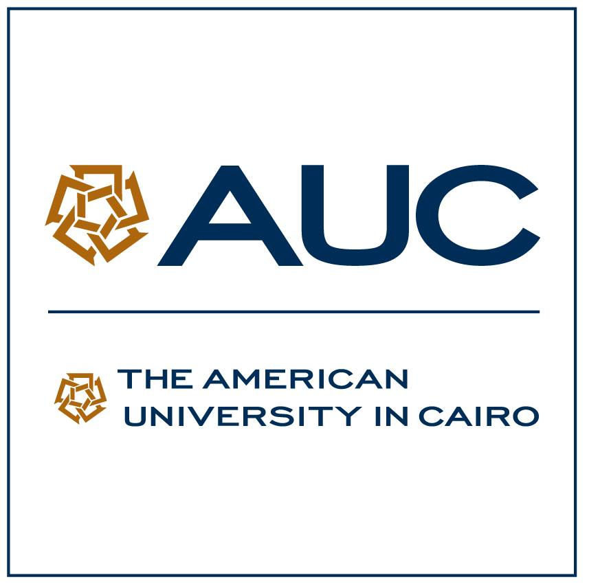
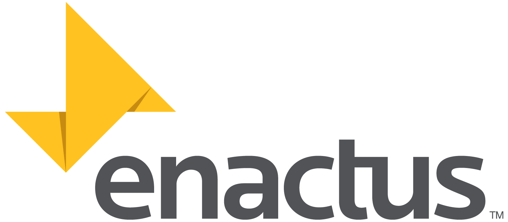

2022 - 2027
University Education
The American University in Cairo
B.Sc. Computer Engineering
Specialization in Artificial Intelligence
GPA: 3.8
Ahmed Fawzy / Portfolio
Education, professional practice, and leadership.
02 / Education
A focused path in computer engineering and artificial intelligence.
University Education
B.Sc. Computer Engineering
High School Education
American High School Diploma
03 / Work Experience
Professional experience spanning AI, DevOps, finance, and cloud infrastructure.
Real Performance Marketing (RPM)
Current internship working at the intersection of artificial intelligence and DevOps within RPM's performance marketing environment.
Commercial International Bank (CIB)
Explored ESG risk, green banking, and AI-enabled financial use cases in a structured internship program.
Banque Misr

04 / Extracurricular Activities
Leading people, systems, and projects across the AUC community.

AUC Student Ambassadors Program

Enactus AUC
07 / Achievements
Recognized for strong performance across Advanced Placement examinations.
Selected for academic achievement, leadership, service, and character.
Participating in Enactus and Student Ambassador while in AUC's Computer Engineering program.